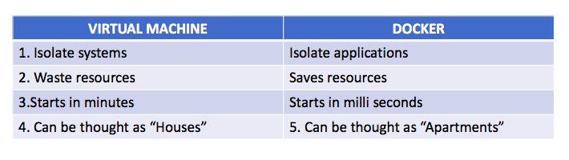
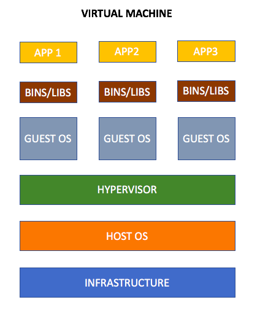
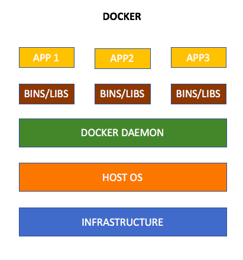
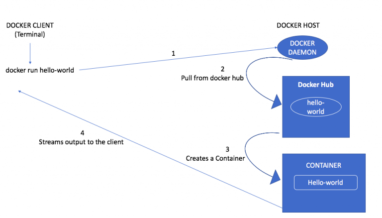

In this new blog, lets get our hands immersed in the Docker containers and what is the difference between the Docker and Virtual Machines and Why Docker is more powerful than Virtual machines. The internal working of the docker is explained in simple terms for easy understanding.
So, Lets get started !
What is Docker ?
Lets break it down into simple words, Docker is a platform for developing and deploying applications by isolating them.
Docker is a tool designed to make it easier to create, deploy, and run applications by using containers. Containers allow a developer to package up an application with all of the parts it needs, such as libraries and other dependencies, and ship it all out as one package
What is Virtual machine ?
Virtual machines is like a emulator, which allows to run an operating system in an app window on our desktop that behaves like a full, separate computer allowing the developers to develop and deploy applications.
Difference between Virtual machines and Docker ?
As you can see, virtual machines isolate the entire system whereas docker container isolates the application.
Virtual machines Architecture
From the above architecture,
1. Infrastructure – refers to Laptops, Systems.
2. Host OS – refers to Operating system (Linux, Windows, Mac OS).
3. Hypervisor – refers to managing director who manages and allocates resources and provides access to the applications.
4. Guest OS – refers to the guest operating system which the developer wish to run (various varieties of Linux),
5. Bins/Libs – refers to binaries and libraries associated with the guest operating system which occupies more space.
6. App1, App2, App3 – refers to the application running on different guest operating system.
Docker Architecture
1. Infrastructure, Host OS,Bins/Libs and Apps are same as the Virtual machines.
2.Docker Daemon – similar to hypervisor which provides interface and isolates the applications from the host operating system.
With these, you might have gained the difference between Virtual machines and Docker containers.
Lets make it more clear by diving into simple “hello-world” example :
Running Docker “hello-world”:
Docker Desktop should be installed based on the operating system you are using.
After installing, try running the below command from your favourite command prompt :
$ docker run hello-world“Hello-world” is the official docker image which is available in the Docker Hub. It is similar to running “hello-world” program.
When you run this command, the docker searches for the “docker-image” locally and the image wont be available in your local system, so it pulls the images from the docker hub and streams the output in the terminal as follows:
Hello from Docker!By this, you come to know what is docker and its internal working. In the next guide, we can explore more about the terminologies in the docker world in detail !